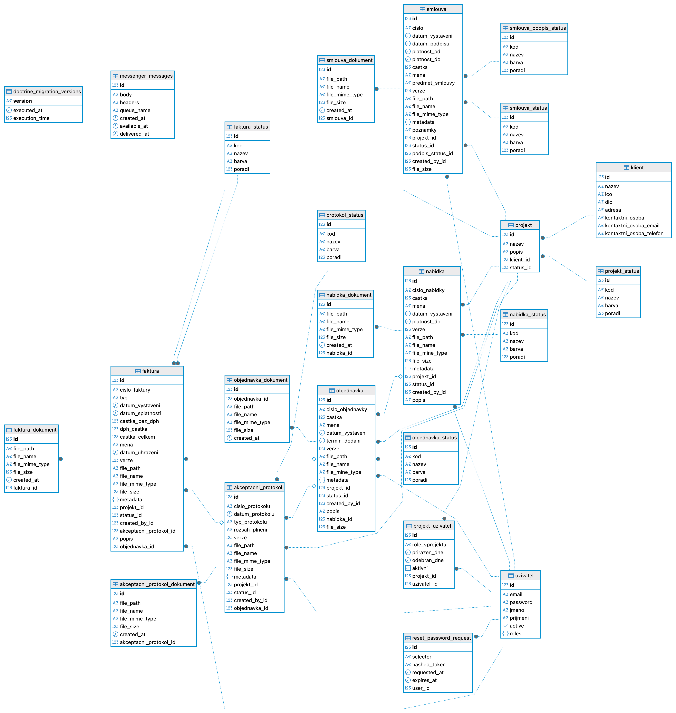

Maturitní projekt
Project Manager
Interní ERP systém pro komplexní řízení projektů a dokumentace
Autor: Jiří Kotlas • Obhajoba: 2026
Představení a Motivace projektu
1. Výchozí problém
- Excel: Chaos a chybovost ve sdílených tabulkách.
- Kompetence: Nejasné přiřazení lidí k zakázkám.
- Roztříštěnost: Smlouvy ztracené napříč e-maily a disky.
- Slabá ochrana: Přístup k financím měl defakto kdokoliv.
2. Dodané řešení
- Centrální DB: Plynulý tok (Nabídka → Dodání → Faktura).
- Bezpečný sklad: Privátní a kontrolované ukládání u klienta.
- ACL Práva: Ochrana a viditelnost na úrovni jednoho záznamu.
- Živý pohled: Vše dostupné ihned na jednom monitoru.
3. Komu a jak to pomůže?
- Spolek BISON: Původní zadavatel platformy (IT).
- Ušetření rutiny: Konec byrokracie, vše je spárováno automaticky.
- White-label: Díky modularitě připraveno na prodej dalším firmám.
Architektura aplikace (Backend Lifecycle)
config/
(YAML) Centrální mozek konfigurace. Definuje napojení k DB, Routy a pravidla pro security.src/Form/ (Type)
Předpisy pro formuláře (např. NákupType). Samy skládají pole a provádějí striktní validaci vstupů.migrations/
Verzování SQL instrukcí. Skripty pro databázi generované automaticky podle úprav v Entitách.src/Controller/
Zjišťuje přes Voters kdo se ptá, ověřuje formuláře, vyřizuje požadavky a předává data Twigu.src/Repository/
Služby stahující filtrovaná data přes DQL příkazy k Databázi (např. najdiByUserId).src/Entity/
PHP třídy mapované na DB tabulky (např. Projekt.php). Hlídají v kódu ORM vazby (M:N).PostgreSQL Databáze
Finální fyzický SQL engine a úložiště zakázek.templates/ (Twig)
Přebírá pole dat přes Controller a přes SSR generuje dynamické a bezpečné HTML UI.src/DataFixtures/
Vývojové skripty. Plní DB umělými chráněnými testovacími daty (např. Faker).Technologický stack
💡 Kliknutím na šipku v rohu karty zobrazíte výzkum trhu a srovnání.
Back-end
Symfony 7.4 + PHP 8.3
- Vysoká bezpečnost.
- Design pattern Dependency Injection.
- Perfektní oddělení kontrolerů a formulářů.
- Zajišťuje dlouhou životnost kódu.
Symfony vs. Laravel
Laravel je rychlý na rozjezd startupů, avšak pro rozsáhlý firemní ERP systém je lepší drsnější Symfony. Nemá tolik "magie" zdarma, vynucuje velice přísnou Dependency Injection, masivně brání neudržitelnému špagetovému kódu a stalo se léta prověřeným celosvětovým standardem pro obří systémy.
Databáze
PostgreSQL 15 + Doctrine ORM
- Robustní vztahové vlastnosti.
- Objektová manipulace s daty.
- Automatická správa migrací struktury databáze.
PostgreSQL vs. MySQL
Běžný start je s MySQL, avšak vyspělý Postgres zásadně čistěji vynucuje integritu cizích klíčů na M:N vazbách a navíc naprosto plynule umí ukládat JSON data a pokročilá Array pole, na čemž staví interní struktura projektu.
Front-end
Twig + Bootstrap 5 + Stimulus
- Rychlý vývoj UI (Není nutné SPA).
- DataTables pro obsluhu tabulek.
- Chart.js pro grafické finanční reporty.
Twig (SSR) vs. React
Psát SPA systém (React/Vue) žádá těžké nezávislé REST API a velkou duplikaci zabezpečení. Pro firemní tabulky je Server-side rendering (Twig) bezpečnější a masivně údernější – zdroj i HTML řídí obří Symfony firewall rovnou na serveru před zobrazením uživateli.
Datový model a Entity
- Kompletní ER Diagram: Spolu propojuje 22 entit systému (+ migrátory).
- Struktura: 2x pevné M:N vazby a dokumentové úvazky převážně metodou 1:N.
- Základem je silná relace mezi Klientem, Projektem a dynamickou M:N vrstvou ProjektUzivatel.
// M:N vazba řešena oddělenou entitou ProjektUzivatel.php
#[ORM\ManyToOne(inversedBy: 'projektUzivatels')]
#[ORM\JoinColumn(nullable: false)]
private ?Projekt $projekt = null;
#[ORM\ManyToOne(inversedBy: 'projektUzivatels')]
private ?Uzivatel $uzivatel = null;
Workflow: Životní cyklus zakázky
- Systémem prochází zakázka logickým, zaručeným tokem.
- Snížení chybovosti: Nový krok využívá data z toho předchozího.
- Každý stav mění přístupnost a grafickou vizualizaci dokumentu na Dashboardu.
Rozpracovaná → Akceptovaná
Tvorba Smlouvy a Objednávky
Podpis Akceptačního protokolu
Schválení a Odeslání faktury
Zdrojový kód (1/2): Kontrolery a View Engine
Tenký Controller & Databáze
- Vybírá data pomocí repositářů logicky vázaných na Doctrine ORM.
- Neobsahuje HTML kód (striktní MVC model).
#[Route('/', methods: ['GET'])]
public function index(ProjektRepo $repo): Response
{
$data = $this->isGranted('ROLE_ADMIN')
? $repo->findAll()
: $repo->findByUser($this->getUser());
return $this->render('index.html.twig', ['projekts' => $data]);
}Dědičnost Twig šablon
- Znovupoužitelnost pomocí
extendsnapříč všemi 60 pohledy. - Automatická sanitizace vkládaného echa (štít proti XSS).
{% extends 'base.html.twig' %}
{% block body %}
{% for pu in projekts %}
<tr onclick="go('{{ path('app_projekt', {'id': pu.id}) }}')">
<td>{{ pu.nazev }}</td>
</tr>
{% endfor %}
{% endblock %}Zdrojový kód (2/2): Handling a Bezpečnost
Uploader servis
- Absolutní oddělení privátních souborů od public složky webu (např. do složky
var/uploads).
public function upload(UploadedFile $file)
{
$safeName = $this->slugger->slug($file->getOriginalName());
$fileName = $safeName.'-'.uniqid().'.'.$file->getExtension();
// Přesun bezpečného souboru do privátní složky
$file->move($this->getTargetDirectory(), $fileName);
return ['filePath' => 'uploads/' . $fileName];
}Custom ACL (Voter)
- Voters aplikují bezpečné M:N firemní požadavky na konkrétní související záznam.
protected function voteOnAttribute($attr, $subject, $token)
{
$user = $token->getUser();
if (in_array('ROLE_ADMIN', $user->getRoles())) return true;
// Smyčkou ověří roli, pokud je součástí daného týmu
foreach ($subject->getProjekt()->getUzivatele() as $pu) {
if ($pu->getUser() === $user) return true;
}
return false;
}Historie a průběh vývoje
- Celý repozitář roste stabilně pět měsíců (více jak 60 ucelených git commitů).
- Projekt prošel ucelenými iteracemi k zajištění odolného výsledku.
Start (Prosinec 2025)
- Výzkum firemních postupů u klienta s tabulkami.
- Tvorba procesních flow a logického modelu (ER diagram).
- Cílové šablonování UI pohledů (tzv. "klikačka").
Rozšíření (Leden & Únor 2026)
- Zapojení Doctrine a databázových migrací pro tabulky.
- Dokódování obrovských vázaných formulářových modulů (faktury, smlouvy...).
- Mechanika chráněných serverových uploadů dokumentů.
Uživatelské testování
Výstupy do obhajoby na míru zkoušky
- Záměrně prázdná karta připravena k doplnění specifickými detaily!
- Budou sem přiloženy screenshoty nalezených nesrovnalostí ze strany zadavatele BISON.
- Testovací scénáře rolí a postřehnutí slabin formátování.
Vize do budoucna
Business Plánování
- Automatická upozornění: Spuštění interních mailů přes "Cron Jobs" pro blížící se splatnosti.
- Manažerský reporting: Rozšířené datové dashboardy a analýzy meziroční úspěšnosti zakázek.
- Další nasazení (White-label): Úprava brandu a překlopení jiným nezávislým malým agenturám.
Technologický přesah
- PHPUnit Testování: Zapsání automatizovaných sad pokrývajících bezpečnost v logice Controllerů a Voterů.
- REST API Integrace: Smluvní vrstva umožňující firmě párovat platby pomocí bankovních webhook styků.
- AI Predikce tržeb: Strojové odhady budoucích výdělků na základě aktivních projektů a analýzy historie.
Data a Dokumenty
- Hromadné exporty dat: Rychlé stahování zakázek a faktur ve formátu tabulek (CSV/XML) pro účetní tým.
- Čtení dat (OCR AI): Extrémně rychlé automatické vyplňování projektových formulářů přímo podle vloženého PDF souboru klienta.
- Generování dokumentů: A naopak – automatické skládání a renderování krásných finálních PDF na základě uzavřených formulářů.
Děkuji za pozornost
Máte nějaké dotazy?
- Autor: Jiří Kotlas
- Technologie: PHP 8.3 / Symfony / PostgreSQL
- Přínos systému: Definitivní odstranění nepřehledného ukládání tabulek ve firmách.